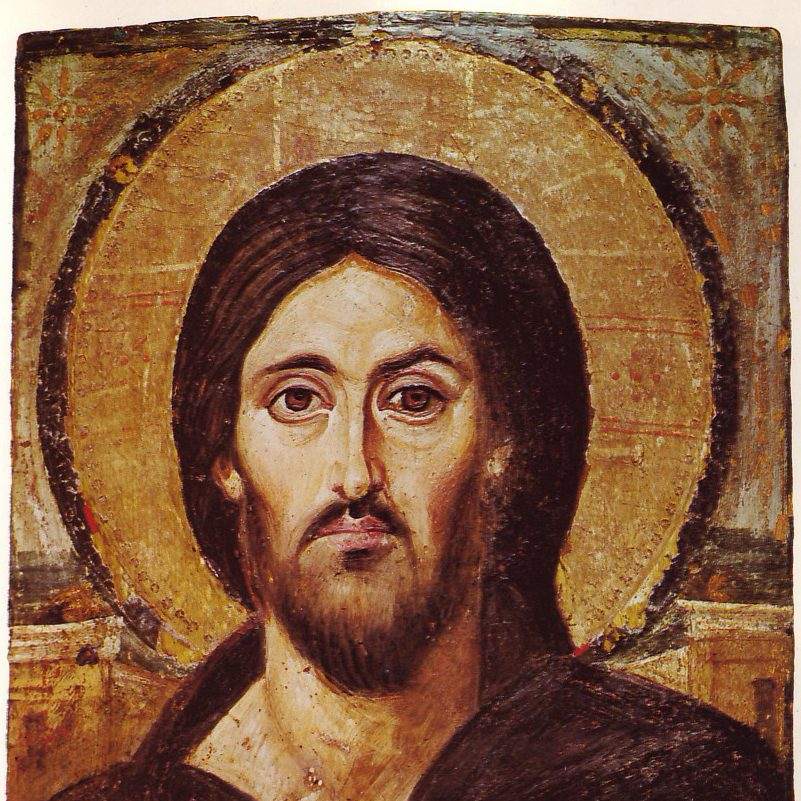

Was the Word "God," or "a god"?
JULY 13, 2026

John 1:1 and the deity of Christ
"John 1:1 is usually translated 'the Word was God,' but the New World Translation reads 'the Word was a god.' Which is right — and behind it, the bigger question: is Jesus God, a lesser divine being, or the highest of created beings? Can you lay out the whole argument, from the Greek and from the rest of the Bible, on both sides?"
A word before we begin. This is the single most-argued sentence in the Bible, and people who love the text, read the Greek, and mean every syllable of it have divided over it for seventeen centuries. A librarian's task here is not to hand down a verdict but to lay the evidence out fully and fairly — the grammar, the immediate context, and the witness of the rest of Scripture — and let you weigh it. So this post builds both cases at full strength and marks honestly where each one pays a price. (Our own translation had to choose a rendering for the verse itself; it takes the qualitative road — "and the Word was divine" — for reasons the John 1 note explains, but that is a rendering, not a ruling. The argument below is yours to finish.)
The sentence that won't sit still
The Greek is Ἐν ἀρχῇ ἦν ὁ λόγος, καὶ ὁ λόγος ἦν πρὸς τὸν θεόν, καὶ θεὸς ἦν ὁ λόγος — three clauses. (1) "In the beginning was the Word": already existing when time began. (2) "and the Word was with God" (pros ton theon): face-to-face, in relationship — so the Word is not simply the same as the one he is "with." (3) "and the Word was theos." The whole fight is that third clause — and, standing behind it, whether the one it names is the eternal God, a distinct-but-lesser deity, or the first and highest thing God ever made.
The grammar: the missing article
Koine Greek has no word for "a." It has only the definite article ("the"). So every "a" or "an" in an English New Testament is supplied by the translator — it is never literally in the Greek. "There came a man" (John 1:6) has no "a" in Greek. That happens thousands of times, and it is the root of the whole dispute: in the clause "the Word was theos," theos ("God/god") has no article, and the translator must decide whether to leave it bare, add "the," or add "a."
The exact construction here — an article-less predicate noun standing before the verb — turns up all over the New Testament, and translators render it three different ways depending on the word and the context:
- Indefinite ("a ___"): "this man is a murderer" (Acts 28:4 — the closest structural twin to John 1:1); "he was a murderer from the beginning" (John 8:44); "you are a prophet" (John 4:19). And, tellingly, the very same word: the Maltese "said he was a god" of Paul (Acts 28:6). So theos without the article can be "a god" — that part of the New World Translation's case is not baseless.
- Qualitative (the nature, no "a," where "a" would be wrong): "God is spirit" (John 4:24 — same construction, and no one writes "God is a spirit"); "God is love" (1 John 4:8 — never "a love"); the Word became "flesh" (John 1:14).
- Definite ("the ___"): a smaller set, where context makes the bare noun definite.
So the construction by itself settles nothing — the same grammar yields "a murderer," "a god," "God is spirit," and "God is love." What decides is the meaning of the noun and the context. The two studies everyone cites: Colwell (1933) observed that a definite predicate noun before the verb usually drops its article — but that only describes nouns already known to be definite; it cannot tell you whether a bare noun is definite, indefinite, or qualitative (reading it the other way round is a logical error). Harner (1973) studied this precise construction and concluded it is usually qualitative — and that John 1:1c is neither "the Word was God" nor "a god," but "the Word had the same nature as God." That qualitative reading is the mainstream of Greek scholarship.
The honest summary of the grammar: "a god" is grammatically possible (Acts 28:6 proves it) but grammatically disfavored — the construction leans qualitative, toward nature, not toward "one of a class." And there is a semantic snag on top: "prophet," "murderer," "king" are classes you can be one of; but in the Bible's strict monotheism there is no class of "gods" to be one of ("besides me there is no god," Isaiah 44:6), which is what makes "a god" sit awkwardly where "a prophet" does not.
The three readings, and one piece of plain logic
Three renderings, three theologies:
- "the Word was God" (definite) — if read as "the Word is the person God," it collapses the Word into the Father. But the clause just said the Word was with God, and later Jesus prays to the Father — you cannot be with someone and be that same someone. So this reading, taken flatly, is ruled out by the verse itself. (It is the ancient error called modalism.)
- "the Word was a god" (indefinite) — a distinct, lesser deity. Solves the with/be problem, but at the price the grammar disfavors and monotheism resists.
- "the Word was divine / fully God" (qualitative) — the Word shares the one God's nature while remaining a distinct person from the Father. Answers the with/be logic (distinct persons, one nature) and matches the grammar's qualitative lean.
Notice what the reader's own instinct — "you can't be with someone and be someone at the same time" — actually proves: it kills the flat, identifying reading, and leaves either the indefinite or the qualitative standing. Which of those two wins is decided not by the one verse but by what the rest of Scripture says the Word is. So — the two cases.
The case that the Word is distinct, and subordinate
This is the reading Arius argued in the fourth century and the Jehovah's Witnesses hold today: the Son is genuinely other than the Father, ranked under him, and — in its stronger form — the first and highest of God's creatures rather than the uncreated God. Its evidence is real and considerable:
The distinction is written in. "The Word was with God." The Son is never the Father, and the Gospel never blurs them.
The Son defers to the Father, everywhere. "The Father is greater than I" (John 14:28); "the Son can do nothing of his own accord" (5:19); "I came not to do my own will but the will of him who sent me" (6:38); "that they may know you, the only true God, and Jesus Christ whom you sent" (17:3); "I am ascending to my God and your God" (20:17); of the last day, "nor the Son, but only the Father" (Mark 13:32).
He prays. "Our Father who art in heaven" — spoken by a man on earth, to the Father in heaven. He cannot be praying to himself. Whoever the Word is, he is not the one he addresses.
"The firstborn of all creation" (Colossians 1:15), "the beginning of the creation of God" (Revelation 3:14), and Wisdom, whom "Jehovah created at the beginning of his work" (Proverbs 8:22, in the Greek Old Testament). On this reading the Son had a beginning — and the model is elegant: the Father, the unmade Architect, brings forth one first and supreme being, the Word, and then makes everything else through him, the master builder. "All things came to be through him" is satisfied without making the builder himself unmade.
The Angel of Jehovah. "I send an angel before you... obey his voice... for my name is in him" (Exodus 23:20–21). Throughout the Old Testament a figure called the Angel of Jehovah appears, speaks as God, bears the divine Name, and leads Israel out of Egypt (Exodus 14:19). Read this way, the "God" who appears and speaks in the Old Testament is the Word — Yahweh's spokesman and agent — while the supreme, invisible God is the Father ("no one has ever seen God," John 1:18; "his voice you have never heard, his form you have never seen," 5:37). And the pre-human Word, on this reading, is Michael the archangel — the Lord descends "with the voice of an archangel" (1 Thessalonians 4:16); Michael leads the armies of heaven (Revelation 12:7; Daniel 12:1).
And monotheism itself. There is one God, the Father; to call the Word "God" flatly seems to make two. Better, then, "a god," "a mighty one," "divine" — a real but subordinate glory, under the one God.
It is a coherent, textually-anchored system, sincerely held. It is not a straw man, and it was very nearly the church's settled view.
The case that the Word is fully God — one nature, distinct person
This reading agrees with every "distinct" and "submits" verse above — and says they describe the Son's person and his mission, not a lesser nature. Its evidence is a second stack the created-Son reading has to account for:
He made everything that was made (John 1:3; Colossians 1:16). "Not one thing came to be that has come to be" apart from him. If he made all created things, he is not among them — he is on the Creator's side of the line. (Tellingly, the New World Translation has to insert "[other]" four times in Colossians 1 — "all [other] things" — to keep the Son a creature; that bracketed word is not in the Greek, and it is doing all the work.)
"Firstborn" means rank, not birth-order. God calls David — Jesse's youngest son — "my firstborn, the highest of the kings of the earth" (Psalm 89:27), and glosses it for us: highest. Israel and Ephraim are each God's "firstborn" though neither was first. And Paul explains why he calls the Son firstborn — "for in him all things were created... and he is before all things" (Colossians 1:16–17): the title is grounded in his being Creator and sustainer, not the first creature. Greek even had a word for "first-created" (prōtoktistos); Paul pointedly did not use it.
God says he created alone. "I am Jehovah, who made all things, who stretched out the heavens alone, who spread out the earth by myself" (Isaiah 44:24). A general-contractor creature doing the building makes that false — unless the "through whom" belongs to the one Creator's own act.
Hebrews 1 all but forbids reading the Son as an angel. "To which of the angels did God ever say, 'You are my Son'?" (1:5) — none. "Let all God's angels worship him" (1:6). "Of the Son he says, 'Your throne, O God, is forever'" (1:8). And to the Son: "You, Lord, laid the foundation of the earth" (1:10 — a psalm to the eternal, unchanging YHWH, put in the Father's mouth to the Son).
The worship line. Created angels refuse worship: "You must not do that! I am a fellow servant... worship God!" (Revelation 22:8–9). The Son receives it, and angels are commanded to give it (Hebrews 1:6; and Thomas: "my Lord and my God!," John 20:28). Worship is the one thing that cannot be delegated — which is why it divides the Son from every creature.
YHWH's own signature, on Jesus. "I am the first and the last," says the one "who died, and is alive forevermore" (Revelation 1:17–18); "I am the Alpha and the Omega, the first and the last" (22:13, where verse 16 says "I, Jesus"). And "the first and the last" is the title YHWH claims exclusively — "besides me there is no god" (Isaiah 44:6). You cannot be "the first" and have had a beginning. So the same book that some read as "the beginning of creation" (Rev 3:14) also calls Jesus the one before whom nothing was.
He simply "was." John 1:1 says the Word "was" (continuous), never "came to be" — the very verb used for created things through the rest of the Prologue. "Before Abraham was, I am" (8:58). "The glory I had with you before the world existed" (17:5). "In him the whole fullness of deity dwells bodily" (Colossians 2:9); "in the form of God" (Philippians 2:6); "Mighty God" (Isaiah 9:6).
And the submission is real — but it is the submission of the incarnate Son. He "emptied himself, taking the form of a servant" (Philippians 2:6–7). "Greater" in "the Father is greater than I" is meizōn — greater in position — not kreittōn, better in nature. A son who obeys his father is no less human; and "Son" and "begotten" are same-nature words (a father begets a son of his own kind), which is why the old line was "begotten, not made": the Son is not fashioned like a tool but is of the Father's own being.
The Angel of Jehovah, and Michael the archangel
This deserves its own weighing, because half of it is strong on any reading. That the Old Testament's visible, speaking God is the pre-incarnate Word — Yahweh's face and voice for the invisible Father — is an ancient Christian reading (Justin, Irenaeus, Tertullian), and it has real support: "no one has ever seen God" (John 1:18); the rock in the wilderness "was Christ" (1 Corinthians 10:4); and the earliest manuscripts of Jude 5 read that "Jesus, who saved a people out of the land of Egypt," later judged them. So the reader's instinct that the Word acted, appeared, and led in the Old Testament is not only plausible — it is old and well-grounded.
What that instinct produces, though, cuts toward deity: if the "God" at the burning bush is the Word, then the one who said "I AM WHO I AM" (Exodus 3:14) is the Word — and when Jesus says "before Abraham was, I am" (John 8:58), he is claiming to be that very "I AM." Identifying the Old Testament God-figure with the Word makes him greater, not smaller.
Is that Word a created archangel? "Angel" (malʾakh, angelos) means messenger — one sent; it names a job, not a nature. So the Word can be "the Messenger of Jehovah" while being divine. And three things resist the identification of the Son with the creature Michael: the Angel of Jehovah receives worship, speaks as God ("I am the God of Bethel," Genesis 31:13), and bears the Name — where created angels refuse worship; Hebrews 1 spends a chapter proving the Son is above the angels, worshiped by them, and the Creator; Colossians 1:16 says the Son created the angelic ranks ("thrones, dominions, rulers, authorities") — so he made Michael; and Jude 9 has "the archangel Michael" not daring to rebuke Satan on his own authority — "the Lord rebuke you" — while Jesus commands Satan and demons directly ("Be gone, Satan!"). Michael appeals to a higher authority; Jesus is the one appealed to. (And "with the voice of an archangel," 1 Thessalonians 4:16, no more makes Jesus the archangel than "with a trumpet blast" makes a general the trumpeter.)
Where the oldest manuscripts weigh in
Two nearby verses are decided by the same manuscript evidence set out in the New Testament introduction. At John 1:18 the earliest witnesses — the papyri P66 and P75, with Sinaiticus and Vaticanus — read "the only God," while the later majority (and the King James tradition) read "the only Son." At John 1:34 the earliest text reads "the Chosen One of God," the majority "the Son of God." The oldest copies, in other words, lean toward the higher Christology at 1:18 — but the manuscripts alone do not end the argument, and honest editions print both.
The three ways the church has read it
It helps to name the landscape, without endorsing a corner:
Trinitarian (the Nicene mainstream): one God in three distinct persons — Father, Son, Spirit — the Son "begotten, not made," of one nature with the Father. Reads 1:1 qualitatively or definitely.
Unitarian / Arian / Jehovah's Witnesses: the Father alone is Almighty God; the Son is a distinct, subordinate being — in the Witnesses' form, the first creation and the pre-human Michael, "a god" in a real but lesser sense. Reads 1:1 "a god."
Modalist (Sabellian): Father, Son, and Spirit are one person in three modes. Reads 1:1 as a flat identity — and is the one option the verse's own "with God," plus the Lord's Prayer, most clearly rule out.
Why sincere readers land differently
Because each reading pays a real price somewhere, and honest people weigh the prices differently.
The full-deity reading must take "firstborn" as rank rather than birth, lean hard on "the first and the last" being said of Jesus, and confess that three persons in one being is beyond tidy comprehension.
The created-Son reading must insert "[other]" into Colossians, read "firstborn" against Psalm 89's own definition, set aside Isaiah 44:24's "alone," and explain how a creature can be worshiped and wear YHWH's exclusive title.
The modalist reading must explain away the plain "with God" and a Son who prays to a Father not himself.
Where you land depends on which verses you treat as the fixed points and which you treat as the ones needing explaining — and that is a genuinely weighty judgment, not a mark of bad faith on any side.
Where this translation stands — and doesn't
A translation cannot print three renderings in one line; it has to choose, and then let the note carry the rest. This project renders 1:1 "and the Word was divine" — the qualitative road — because it is the reading the grammar most supports, it keeps the distinction the verse itself insists on ("with God"), and it avoids both the flat "was God" (which an English reader can hear as "the Word is the Father") and "a god" (which the grammar least supports and monotheism resists). That is a translation choice, argued in the open — not a verdict on the deep question of whether the Son is God of very God, a lesser divine being, or the first of creatures. On that, I set the two cases side by side, as above, and hands the scales to you.
Read the verse in place, with its note: John 1:1. The manuscripts behind 1:18 and 1:34: the New Testament introduction.
Read in the text
- John 1
- Compared against the translation’s seven-version shelf — the NIV, the KJV, the Douay-Rheims, The Living Bible, the 1599 Geneva Bible, the American Standard Version, and the New World Translation. See how the translation is made.